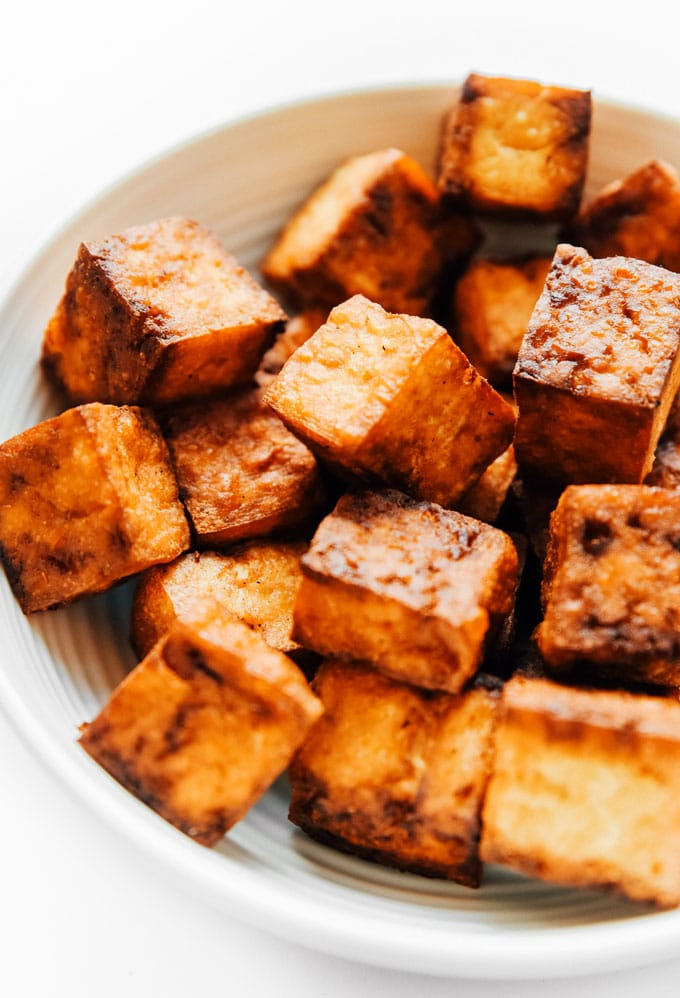

Fried Tofu

Fried Tofu Description
This tofu recipe requires and air fryer. I use an add on for the Instant Pot. The tofu is great for fusion tacos, on salads, or even in quesadillas. It is great for vegans and non-vegans alike.
Ingredients
- 1 10oz package of firm tofu (Hodo brand preferred)
- 2 tbsp soy sauce
- 1 tbsp neutral high heat oil
- 2 tsps sesame oil
- 1.5 tsp garlic powder
- dash cayenne
- 1 tsp umami powder (optional, but addds great flavor)
- pinch of salt